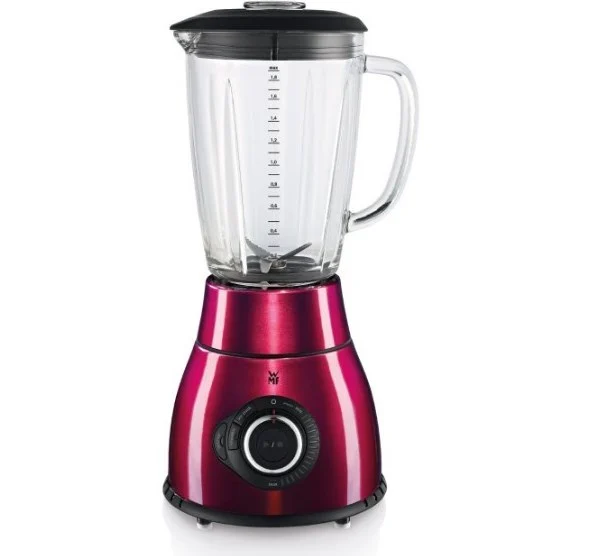
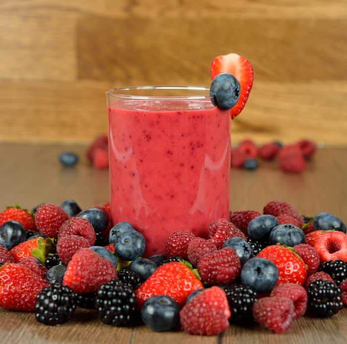
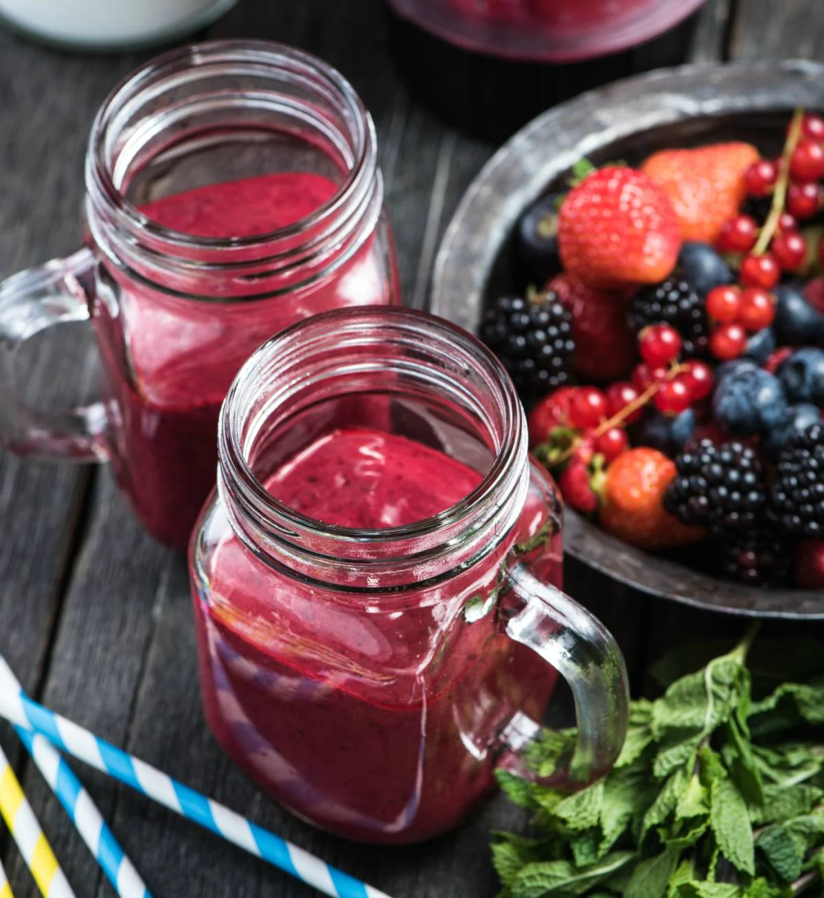

Enlace al menú
Enlace al menú
Spicy Tuna Poke
Indice
Ingredientes
- 300 g frutos rojos (moras, frambuesas, arándanos, cerezas y fresa, grosellas. Pueden ser congelados)
- 2 yogures griegos sin azúcar
- 2 cucharaditas de edulcorante vegetal Stevia
- 125 ml de zumo de naranja
Paso a Paso
- Lava las frutas, si son congeladas déjalas un par de horas antes en la nevera.
- Introduce las frutas en la batidora, añade el zumo de naranja, los yogures y el edulcorante. Tritura durante unos segundos hasta obtener una textura cremosa.

- Pasa los batidos por un colador tipo chino para una textura más fina.
- Decorar con algunas frutas rojas de las que hemos reservado.

Resultado final

Enlace a la parte de arriba